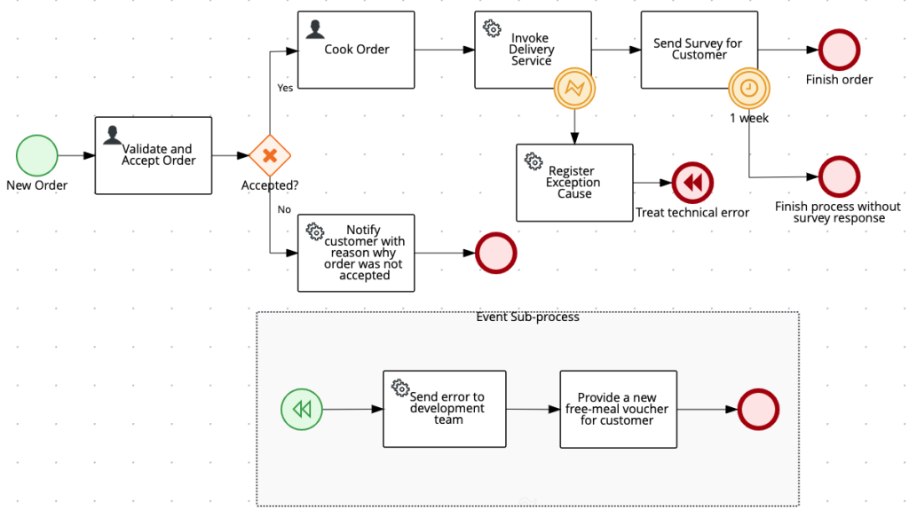
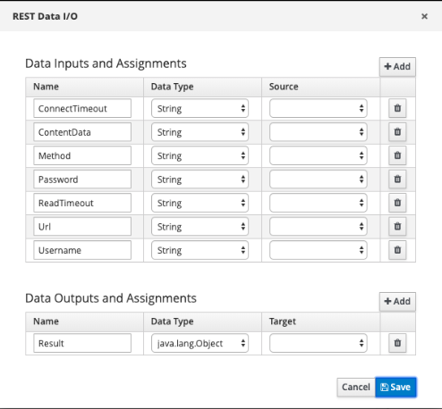

Recall basic modeling concepts
In a business automation project, business process assets are described with BPMN diagram or CMMN diagrams. It’s recommended to base the creation of diagrams on specifications definition, therefore, the implementation will be executable in any software which attends to the specification. Process modeling knowledge is not restricted to specific products.
 | Just like a Java class can be imported and edited within different IDEs like Eclipse, VSCode, and IntelliJ, the BPMN2 files are also parsed and displayed correctly in other BPMN Modeling tools. If the user chooses different BA tools to work on process authoring, that’s fine, as long as the tools follow the specification definition. |
First, let’s review the core concepts of commonly used BPMN2 elements and how jBPM provides them. Then, we will proceed on more in-depth details about how model processes following best practices and advanced modeling concepts.
Along with the descriptions, the book also references the specific jBPM source code which delivers the features. In this way, dev-focused readers can have a better understanding of how everything works under the covers.
| Visualizing the source code of open-source projects is an advantage for developers who wants to get more in-depth on the functioning without going depending exclusively on documentation. |
Business processes can be modeled in diagrams using this three element types: Events, Activities, and Gateways. Let’s start with the events.
As per BPMN2 specification: An Event is something that “happens” during a process execution.
Events are categorized as: Starting events, Intermediate events and End events. Events can react to and be triggered based on different happenings. It can also be used to throw a result, raise an error. All these behaviors are examples of events of a business process. The events are represented with circles, and BPMN2 specification has sixty-four different types of events.
Don’t worry, though. It is not necessary to know all sixty-four. Once you understand the concept behind the types, you will then know when to use them. The more you get familiar with it, the more intuitive it gets. The following concepts provide a baseline:
- Events are classified with types Start, Intermediate, and End. (When does it happen during the flow?);
- Separate by definitions: The most commonly used definitions are None, Escalation, Error, Timer, Signal, and Terminate. (What is happening?);
- An event might be triggered, or it may trigger something, by being a catching or throwing event;
- When put on top of a task or subprocess, the event is classified as a Boundary event;
- Events can interrupt the current work, or it can allow it to go on. This behavior classifies it as an Interrupting or Non-Interrupting event.
The BA Specialist should mix these capacities to deliver the expected business solution. Take a look at the following example. It represents the usage of different events: two start events, two catching intermediate events, one throwing intermediate event, and four end events.

Note the events placed along with the flow and the ones placed as boundary events of the tasks. Notice how the Intermediate Error is used on top of an external REST Service, which makes an external request, to catch possible errors. Also, the Intermediate Timer set on top of the Human Task “Collect User feedback” to take necessary steps in case of delayed user action after a determined time limit.When an event happens, a step or series of steps are then triggered: tasks which need human interaction, e-mails that should be sent, external services which need to be called, business rules which needs to validate data within the process. The actions executed during the flow are considered activities.
Activities can be atomic, or they can be decomposable. Atomic activity, is, for example, a Service Task which does a call to an external service (REST Task), or a User Task, which needs intervention from a human. The decomposable activity would be a step which contains steps within it; in other words, a subprocess.
jBPM delivers the following activity types:
- A Business Rule task is used to add decision logic to the process, a.k.a. business rules. It triggers a set of rules which is implemented using approaches provided by Drools engine like, DMN models, Decision Tables, DSLs, Guided Rules, and also drools code.
- The Script Task is an activity which provides to more advanced developers the possibility to use Java, Javascript, or MVEL language to code logic within a process execution. From the business point of view, it is not very intuitive when used, but might be required for some use cases.
- A user task is used to query information from humans as an input for the process. This is not an automatic task. The process always stops when reaching a User Task and waits for human interaction. A user task is assigned to a single user or a group of users. Only one user can complete the task. The engine is flexible and allows notification, escalation, delegation based on the business requirement (i.e. if the task is not completed within two days, notificate the manager).
- The decomposable activities, the subprocesses are the following types: embedded, ad-hoc, reusable, multiple instance (MI) and event subprocess.
Before proceeding, it’s essential to understand how jBPM implements and delivers activities, look deeper into the concept of Work Items.
What is a Work Item
A Work Item (WI) is a set of logic that can be automated, graphically represented in a process or case. The same logic can be reused by simply changing the parameters. BPMN2 and CMMN specs already defined the most commonly used work items.
| Understanding these concepts facilitates the task of creating custom tasks, content described later in this section. This concept is mainly essential for developers or the ops team who needs to deploy custom tasks into environments; |
Every WI has two main components:
Definition: defines a unique name, a description, and a 16×16 icon. This information isdisplayed in the process designer. It is a .wid file;
Handler: Actual logic that makes the task happen, that executes the task. The WIH is a Javaclass which implements WorkItemHandler interface. It has at least, an execute and an abort method.
Some Work Items, mostly Service Tasks, requires configuration during its initialization, and because of that, it needs to be configured in the project deployment settings. This configuration is set via parameters in the class constructor method. The topics Service Tasks and Custom Tasks will show more details about the initialization configuration.
Finally, the business automation specialist can choose whether to use the native work items provided by jBPM or to create custom work items which are adapted for domain-specific logic.
Service Tasks
A service task is a task that does not require any human action with the engine. It can be executed by the engine synchronously or asynchronously (process execution should wait for the execution or not, respectively). We can invoke external services via REST, send e-mails, log messages, and even invoke complex business rules in order to define the next steps to be taken in the process flow.
| Service Task Configuration Tips: Service tasks need additional configuration, set in the Deployment Configuration, Work Item Handlers Section of the project. These configurations can either be set manually or added via the Service Tasks menu. The configuration is set into /projectDir/src/main/resources/META-INF/kie-deployment-descriptor.xml. |
Rest Task : The Rest Task allows external services to be accessed using REST standards and using HTTP 4.3 API.

Every new task will have by default the following variables available. Use or not authentication, use different types of HTTP methods, and body formats. All these configurations are done via variables in the task.
The Data Inputs and Assignments are further converted and used in the request, like URL, headers, body, etc. The Data Outputs and Assignments receives the response, the resulting information from the execution, returned by the service.
Email Task: The e-mail task handles e-mail transmission and allows the user to addwithout email functionality to a process, without coding a new feature or service. The transmission is handled directly from the process server, in other words, the kie server can use the application server SMTP, previously configured.
The Data Inputs and Assignments are further converted and used in the request, like URL, headers, body, etc. The Data Outputs and Assignments receives the response, the resulting information from the execution, returned by the service.
During the process design, the following parameters are expected by default on the Email task: the subject, content of the email, the sender e-mail, and the destination (single or list).
Log Task: The Log task can be used in a process to output information into the applicationserver logs. To configure it, it is possible to use the out-of-the-box WIH SystemOutWorkItemHandler, or create a custom one to handle specific business needs.
Business Rules Tasks: jBPM engine has cloud-native BRM capabilities which allow the businessautomation specialist to author processes and rules, and execute them with scalable native core engine integration.
The capability of adding decision tasks to a process brings the possibility of creating simple solutions to solve complex scenarios.
When the process reaches a Business Rules Task, the configured set of rules is triggered in the Drools engine within Kie Server. Once there are no more active rules, the flow goes on to the next node. jBPM offers three out-of-the-box options to use this feature: Business Rule Task, Decision Task, Business Rules Remote Task. More details are presented further in this section, in the blog post about “Business Tasks”.
This blog post is part of the fourth section of the jBPM Getting started series:
Effective modeling, Integration and Delivery.